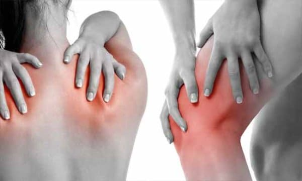
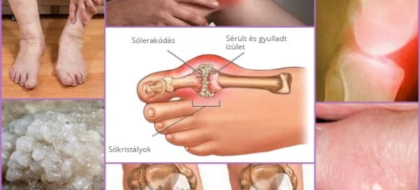

"Az ízületek
helyreállítására szolgáló készítményt már rég megtalálták" A neves német reumatológus
szakértő őszinte interjút adott egy magyar kiadványnak.
Egészségügyi hírek - Magyar verzió
13.03.2022
Hogyan küzdjünk meg az ízületi betegségekkel szinte azonnal és legalább 10 évre?
Hogyan lehet egyszer és mindenkorra helyreállítani az ízületeket?
Hogyan lehet kivonni a sót az ízületekből és teljes életet élni? 10 európai
szakemberből 9 miért nem tudja, hogyan kell megfelelően helyreállítani az
ízületeket?
Karl Kirschmeier, német professzor és
reumatológus szakértő válaszol ezekre a kérdésekre.
Karl Kirschmeier professzor a berlini Eva
Mayr-Stiehl Központ reumatológiai központjának vezetője. Az ízületi problémáknak
egyetlen oka van, de 10-ből 9 szakember figyelmen kívül hagyja.
Mindössze egy oka van az ízületi betegségeknek, de pont azt hagyja figyelmen
kívül a 10 magyar szakértőből 9.
Prof. Karl Kirschmeier: "Számos európai országban
még mindig elavult és hatástalan szereket használnak az ízületek
helyreállítására, amelyeket gyakran egy életen át kell szedni. Valójában
azonban az ízületek ma már ugyanolyan könnyen kúrálhatók, akár a nátha."
Karl Kirchmeier tavaly több országba is ellátogatott,
hogy tanulmányozza kollégái tapasztalatait. Nincs magyarázat arra, amit ott
látott. Karl szerint sok országban a reumatológia a múlt század közepén ragadt.
A kiemelkedő németországi előadásokat követően Karl
Kirschmeier professzor Németországban tartott előadásait követően beleegyezett,
hogy interjút adjon egy magyar kiadványnak. Mi nem tetszett a neves szakértőnek a
helyreállítás módjaiban? És miért állítja Karl, hogy a ROMÁNIA, CSEHORSZÁG,
MAGYARORSZÁG ízületi rendellenességekkel küzdő polgárai soha nem lesznek képesek
egészséges életet élni.
- Egy német újságírókkal folytatott beszélgetésen azt
mondta, hogy sok országban sokkolta, amit látott. Kifejtené ezt bővebben,
kérem?
Szeretném elmondani, hogy nagyon jó kapcsolatot ápolok
ezekkel az országokkal, kultúrájukkal és polgáraikkal. De a patológiák
helyreállításának módjai valóban megdöbbentőek. Az egészségügy legalább 20, de
talán 30 évvel le van maradva. Ez mindenesetre azt jelenti, hogy az ízületek és a
mozgásszervek helyreállítására nincs semmi. Mondhatnánk, hogy sok országban nem
létezik olyan tudomány, mint a reumatológia.
Sok szakember általában vagy elavult készítményeket ír
fel, vagy népi gyógyászati tanácsokat ad. Ezek pedig kevéssé hatnak az ízületi
problémákra.
Így az ízületek és a porcok NEM javulnak, ez nem elég a
betegség tüneteinek - fájdalom, gyulladás, duzzanat - enyhítésére. Képzeljük el,
mi történik a testben. Ha valaki bevesz egy tablettát, bedörzsöl egy
érzéstelenítő gélt vagy injekciót alkalmaz, a fájdalom elmúlik. De amint a szer
hatása csökken, a fájdalom azonnal visszatér.

Sok készítmény csak átmenetileg enyhíti a
fájdalmat, de nem szünteti meg az okot.
A fájdalom viszont fontos mutató, amely jelezheti az
ízületben zajló kóros folyamatot. Ha a fájdalom enyhül, az érintett ízületek még
nagyobb károsodásnak lehetnek kitéve. A pusztulás folyamata 3-5-szörösére
gyorsul, és végül visszafordíthatatlan változásokhoz és a mozgás képességének
teljes elvesztéséhez vezethet.
Az ízületi rekonstrukciónak ezt a módszerét a fejlett
országokban már 20 éve nem alkalmazzák. A fájdalomcsillapítót csak végső esetben,
nagy pontossággal és óvatossággal alkalmazzák. Németországban csak receptre és
szigorú felügyelet mellett árusítják őket.
Nyilvánvaló, hogy sokkal jövedelmezőbb a tünetek
megszüntetésére szolgáló termékeket állandó, magas áron eladni, mint egyszer s
mindenkorra segíteni az embernek, helyreállítani egy ízületet... így ez már-már
felháborító!
- És mi a helyzet Németországban az ízületek
helyreállításával kapcsolatban?
- Minden német szakértő, a reumatológus professzoroktól
kezdve a belgyógyászokig és más szakemberekig, már régóta megértette, hogy nem a
betegség hatásaival kell foglalkozni, hanem az okokkal. Ez a teljes, gyors és
biztonságos felépülés kulcsa. És mi az ízületi fájdalom fő oka? Ez a sók
lerakódása, amely a vérkeringés és az ízületi folyadék zavarai miatt következik
be.
Az ízület felületén lerakódott só, mint a csiszolópapír,
károsítja a környező szöveteket - csontot és porcot. A növekvő só kristályai
károsítják az izomszövetet, az inakat, az ereket és a hajszálereket. Ez
gyulladást, fertőzést, duzzanatot és erős fájdalmat okozhat.
Előrehaladott esetekben a nagy mennyiségű só
felhalmozódása hirtelen mozdulatok során könnyen eltörhet a csont egy része, ami
teljes rokkantságot és az ízület tartós mozgásképtelenségét okozza.
Ezért a német szakértők elsősorban az ízületi keringés
helyreállítását javasolják oly módon, hogy az évek során felhalmozódott só
eltávolításra kerüljön, ezáltal beindítva az ízületi folyadék normális
keringésének folyamatát és javítva az ízületi szövetek regenerálódását.

A sók felhalmozódása az ízületek felszínén a kóros
folyamatok egyik oka.
Valójában az emberi ízületek nagyon jól regenerálódnak,
képesek önmagukat helyreállítani, akárcsak a gyíkok a farkukat. Csak egy kicsit
kell segíteni nekik - meg kell szabadítani őket a rájuk rakódott sótól, és máris
elkezdődhet maga a folyamat.
Az 1990-es években svájci tudósoknak sikerült
elsajátítaniuk a B-kvázivitamin egy speciális készítményét, az alfa-artroferolt.
A romló ízületek legnagyobb ellensége, mivel a porcok helyreállítására
gyakorolt hatása nagyon erős lehet, és nincs analógja.
Ez az anyag képes behatolni a só molekulákba és belülről
porlasztani azokat - ennek eredményeképpen az ízületi felületek megtisztulnak, a
vérkeringés és az ízületi folyadék keringése helyreáll. ÖRÖKRE! Vagy amíg a só
újra fel nem épül (de ez akár évtizedekig is eltarthat). NEM szükséges
készítményeket használni a fájdalom és a gyulladás megszüntetéséhez. Örökre
elfelejtheti az ízületi gyulladást, nem kell attól tartania, hogy teljesen
elveszíti a mozgékonyságát, és protézisre lesz szüksége.
Amikor megláttam a magyarországi, csehországi és néhány
más európai ország statisztikáit az ízületi rendellenességekről, égnek állt a
hajam. Tudja, mi a rokkantság leggyakoribb oka? Nem rosszindulatú daganat, nem az
immunhiány vírus, nem a magas cukorszint, hanem az ízületi gyulladás! Egy
közönséges gyulladás, amely Németországban a legolcsóbb szerekkel néhány hét
alatt helyrehozható, más országokban gyakran rokkantsághoz vezet!
Németországban ma az ízületi gyulladást nem tekintik
veszélyes kórképnek, kivéve természetesen a súlyos traumás sérüléseket:
töréseket, zúzódásokat stb. Az ízületi fájdalom és gyulladás csak annak a jele,
hogy az ízületek sóval "szennyezettek", és ideje megtisztítani őket. Néhány hetes
"tisztítás" után az ízületek visszatérhetnek a normális állapotba, és a problémák
a következő évtizedre elfelejtődhetnek.
- Hogyan "tisztítják" az ízületeket Németországban?
- Manapság már léteznek olyan speciális termékek,
amelyeket arra terveztek, hogy megtisztítsák az ízületeket a sólerakódásoktól.
Ezek alfa-artroferolt tartalmaznak. Közülük a vezető a krém. Alfa-artroferolt tartalmaz egy speciális,
könnyen felszívódó formában, ami nagyon hatékonnyá teszi. Izraeli, svájci és
amerikai jóváhagyással rendelkező termék, amely otthon is használható a
gyulladások kezelésére és az ízületek helyreállítására.
A másik fontos előnye,
hogy vitaminok, makro- és mikrotápanyagok komplexét tartalmazza, amelyek célja az
ízületi szövetek működésének javítása. Más szóval, komplex regeneráló hatással
van a csont- és porcszövetre, az ízületi folyadékra, az izomrostokra, az ízületi
és ínszövetre. Komplex hatások nagyon gazdag spektruma
A több mint 50 összetevőt
tartalmaz. Nem sorolom fel mindet, csak a legfontosabbakat:
Árnika kivonat
Tágíthatja az ereket, javíthatja a
vérkeringést, segíthet a sérült szövetek helyreállításában és a
gyulladás megszüntetésében, fájdalomcsillapító hatású.
Mentol
Segít gyorsan megszüntetni a fájdalmat
és javítani az ízületek mobilitását.
Eukaliptusz illóolaj
Fertőtlenítő és gyulladáscsökkentő
tulajdonságokkal rendelkezik. Megakadályozhatja a baktériumok
szaporodását és enyhítheti a fájdalmat.
Kámforolaj
Segít kitágítani az ereket és javítja a
tápanyagok szállítását a szövetekhez és sejtekhez. Ennek a
hatásnak köszönhetően javul a szövetek regenerációja.
Kamilla kivonat
Nyugtatja és hidratálja a bőrt,
regenerálja a felhámot, és segíthet a görcsök enyhítésében.
Felgyorsítja a regenerációs folyamatokat, javítja a mikrokeringést
az alkalmazás helyén, serkenti az anyagcsere-folyamatokat.
- Tudomásunk szerint a
nem kapható a magyar gyógyszertárakban?
- Igen, így van. A szakemberek inkább "etetik" a
lakosságot rengeteg érzéstelenítővel és csontvédő szerrel, ahelyett, hogy valóban
segítenének rajtuk.
Továbbá kétségtelen, hogy sok szakértő, legalábbis azok,
akik érdeklődnek a fejlett helyreállítási módszerek iránt, ismerik az olyan
készítményeket, mint a és annak regeneráló
erejét. De nem vállalják a kockázatot, hogy olyan terméket írjanak fel, amely
valóban segíthet.
- Mit tanácsolna a magyarországi ízületi problémákkal
küzdő embereknek?
- Az átlagemberek szenvednek leginkább a problémától,
különösen az 50 év felettiek. Ez nem az ő hibájuk, ilyen a testünk felépítése.
De szerencsére van megoldás! Megállapodtunk a Magyar
Reumatológiai Kutatóközponttal, hogy a t kedvezményes áron árusítsák
minden olyan magyar állampolgárnak, aki ezekkel a problémákkal küzd. A központ
munkatársai egy speciális elosztóközpontot hoztak létre, és mi biztosítottuk a
szükséges számú csomagot. Ezért mostantól bármely magyarországi lakos
megrendelheti a t házhozszállítással, megfizethető
áron. Gyors szállítás és nincs szükség előlegre!
Már harmadik hónapja áruljuk a t. Ezzel a lehetőséggel már több ezer magyar
állampolgár élt. Megkérünk mindenkit, aki használta a t, hogy egy 1-től 10-ig terjedő skálán értékelje,
mennyit segített neki a termék. Eddig több mint 3000 ember vett részt a
felmérésben, és a termék 10-ből 9,83-as átlagértékelést kapott.
Mint láthatja, a már több
ezer magyar állampolgár mozgékonyságának helyreállításában és fájdalmának
enyhítésében segített, és Ön is közéjük tartozhat.
- Meddig értékesítik a terméket akciós áron?
- Amíg a kiosztott készlet el nem fogy. De rögtön
szeretnék mindenkit figyelmeztetni, hogy nagyon kevés promóciós termék maradt. A
megrendelések napról napra nőnek. Az emberek továbbadják egymásnak az
információkat, tanácsot adnak a barátaiknak, és rendelnek a rokonaiknak. Nem is
számítottunk arra, hogy a ről szóló információk
ilyen gyorsan elterjednek.
Amíg a termék még kapható, mindenkinek 45 év felett
ajánlom, hogy rendelje meg a promóciós áron a hivatalos weboldalon:
Köszönöm! Nagyon hasznos! Rendeltem t. A tanácsadó azt mondta, hogy a termék még
mindig van raktáron, de hamarosan elfogy. Időben kaptam tájékoztatást a
termékről.
Én azok közé az emberek közé tartozom, akik már
kipróbálták a t. Ez tényleg a legjobb. Nekem
ízületi gyulladásom van - és ez a probléma már 7 éve zavar. Kész voltam egész
életemben tablettákat és injekciókat szedni, de végül a után elmúlt a fájdalom. Teljesen eltűnt.
Mindenkinek ajánlom - nekem segített!
63 éves vagyok. A térdeim 53 éves korom óta fájnak.
Az utóbbi időben a fájdalom teljesen elviselhetetlenné vált. Egy szakavatott
ismerősöm (gyerekkori barátom) mesélt nekem erről a programról 3 hónappal
ezelőtt, és azt tanácsolta, hogy vegyem meg a t. Most úgy futok, mint
egy fiatalember... Nincs fájdalom, nagyszerű érzés! A nagyszerű!
A szakemberek fő célja, úgy tűnik számomra, hogy
minél több pénzt "préseljenek ki" belőlünk. Csak ez érdekli őket. Félévente
egyszer kaptam injekciót. Idén ősszel azt mondták, hogy vegyek valami szert,
amit nem mertem bevenni. A szakember még azt sem nézte meg, hogy milyen egyéb
problémáim vannak, és hogy ezek a készítmányek hogyan hatnának a
szervezetemre. Abszolút közömbösség és olyan termékek felírása, amelyekért a
gyártótól kártérítést kapnak. Lehet, hogy valahol másképp van, bár nem vagyok
benne biztos. Az egészségünkről van szó. De megkaptam a szükséges
információkat erről az új termékről!
Igen, hazánkban csak meghalni lehet. 69 éves
vagyok. Már a társaim kétharmada meghalt, a többiek alig mozognak, a karok,
lábak és a hát állandó fájdalma miatt ... Érdemes megfontolni.
A termék valóban nagyon jó. Magam is használtam
tavaly nyáron (a fiam hozta haza külföldről). A probléma megszűnt! Eddig
nincsenek tünetek. Magam is meglepődtem. Remekül érzem magam. Mindenkinek
ajánlom ezt a terméket. Különösen, ha most van lehetőséged megrendelni egy
akció keretében!
A nel kapcsolatban
nekem is vannak pozitív tapasztalataim. Régebben állandóan injekciókon éltem,
és most már majdnem két hónapja szinte "repülök" a használata után!
Én is elégedett vagyok ezzel a termékkel. Eleinte
sok mindent kipróbáltam, de egy idő után már semmi sem működött. Aztán
elmentem egy szakemberhez, aki azt tanácsolta, hogy próbáljam ki az új krémet (a fiatal szakember valószínűleg még
mindig úgy gondolja, hogy az egészségügy az emberekért van, nem pedig a pénz
"kipréseléséért"!). A segített nekem az első
alkalommal - a fájdalom szinte azonnal megszűnt, amint befejeztem az ajánlott
kúrát. 3 hét után már elfelejtettem, mi az a fájdalom. Olyan jól érzem magam,
mint fiatal koromban!
A szomszédom 72 éves, gyakran panaszkodott
derékfájásra. De az elmúlt hónapban aktívnak és vidámnak látom. Azt mondta,
hogy használta a t, amit az unokája hozott neki
valahonnan.
A német fórumokon a
értékeléseit olvasva majdnem lemaradtam a promócióról! De hála az égnek,
sikerült kitöltenem az űrlapot. És sikerült megszereznem kedvező áron.
A nel egy ízületi
problémákkal küzdő emberek fórumán ismerkedtem meg. Sokan büszkék az
eredményekre. Még csak 3 napja használom, és a javulás mindenben észrevehető.
A fájdalom teljesen elmúlt, a zihálás észrevehetően csendesebb, enyhe duzzanat
maradt, de sokkal jobb, mint volt. Szóval, majd írok nektek az eredményekről,
de már most érzem a változást.
Köszönöm. Köszönöm. Magamnak és a férjemnek is
rendeltem. Megkérdeztem a menedzsert, hogy mikor lesz elérhető a következő
adag - azt mondta, hogy még nem tudja. Ezért gondoltam, hogy ez lehet az
egyetlen módja annak, hogy kipróbáljam a terméket.
Vélemények